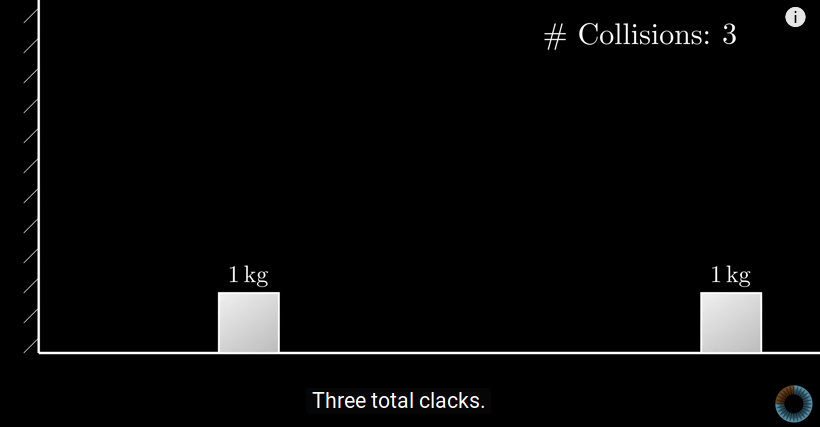

Table of Contents
Giải thích một video của 3Blue1Brown bằng ma trận 2x2 public
Giới thiệu
Trong một video trên kênh YouTube 3Blue1Brown (The most unexpected answer to a counting puzzle, taị https://www.youtube.com/watch?v=HEfHFsfGXjs) được chia sẻ rất nhiều trong thời gian gần đây, Grant Sanderson đã giới thiệu bài toán sau của Gregory Galperin về sự va chạm của 2 hình hộp như hình dưới đây, trong đó hộp bên trái có khối lượng bằng 1 và hộp bên phải có khối lượng là \( m \geq 1 \). 
Ở thời điểm bắt đầu, hộp bên phải chuyển động thẳng đều về phía tường (bên trái) và hộp trái đứng yên. Hai hộp có thể va chạm với nhau và với tường. Giả sử không có ma sát và các va chạm đều là đàn hồi (động lượng và năng lượng được bảo toàn), ta muốn đếm tổng số va chạm (hộp-hộp và hộp-tường), chẳng hạn trong trường hợp khối lượng hai vật bằng nhau (\( m=1 \)) có tổng cộng 3 va chạm: hộp phải với hộp trái (sau đó hộp phải đứng yên), hộp trái với tường, và hộp trái với hộp phải (sau đó hộp trái đứng yên). Trong trường hợp \( m=100 \), tổng số va chạm là 31 và nếu \( m=10000 \), là 314. Grant Sanderson chỉ ra rằng nếu \( m \) là một lũy thừa của 100, giả sử \( 100^k \) thì số va chạm là \( k \) chữ số đầu tiên của số \( \pi \).
Youtuber này cho rằng thực hiện thí nghiệm này và đếm số va chạm là cách tính số \( \pi \) đẹp nhất nhưng cũng kém hiệu quả nhất, so sánh khối lượng \( m \) cần thiết để tính chính xác 20 chữ số thập phân của \( \pi \) với khối lượng một lỗ đen. Anh dành một tuần để khán giả của mình suy nghĩ vì sao số \( \pi \) lại xuất hiện trong một bài toán va chạm đàn hồi.
Qua bài tập sau, ta sẽ thấy đường tròn (hay số \( \pi \)) xuất hiện một cách tự nhiên qua góc argument của giá trị riêng (phức) của một ma trận 2x2. Sử dụng một số tính toán cơ bản được học trong môn đại số tuyến tính, ta sẽ chứng minh tổng số va chạm là \[ N = \left \lfloor \frac{2\pi}{\arccos(\frac{m-1}{m+1})}\right\rfloor \text{ khi } m\geq 2 \]
Với \( m \) lớn, dùng khai triển Taylor \( \arccos(1 - 2\epsilon) = 2\sqrt{\epsilon} + O(\epsilon^{3/2}) \) ta có \[ \frac{2\pi}{\arccos(\frac{m-1}{m+1})} = \frac{2\pi}{2(m+1)^{-1/2} + O((m+1)^{-3/2})}= \pi\sqrt{m+1} + O(\frac{1}{\sqrt{m+1}}) \] Do đó khi \( m=100^k \) thì \( N = \pi .10^k \) là \( k \) chữ số đầu tiên của \( \pi \).
Mô hình hoá
Va chạm giữa 2 hộp
Chọn chiều dương từ trái sang phải và gọi \( a,b \) lần lượt là vận tốc của hộp phải và hộp trái trước khi va chạm, và \( a', b' \) là vận tốc ngay sau khi 2 hộp chạm nhau, định luật bảo toàn động lượng và năng lượng (Sách giáo khoa Vật Lý lớp 10) nói rằng
\begin{equation*} \begin{cases} \frac{1}{2}ma'^2 + \frac{1}{2}b'^2 = \frac{1}{2}ma^2 + \frac{1}{2}b^2, \\ ma' + b' = ma + b \end{cases} \end{equation*}Viết lại phương trình thứ nhất thành \( \frac{1}{2}m(a' - a)(a'+a) = \frac{1}{2}(b-b')(b+b') \) và thế \( m(a'-a) = b-b' \) (phương trình thứ 2) ta có hệ phương trình
\begin{equation} \label{eq:bb} \begin{cases} a'-b' = a-b, \\ ma' + b' = ma + b \end{cases} \end{equation}Câu 1.
Dùng phép khử Gauss để tính \( a', b' \) theo \( a, b \) từ hệ phương trình \eqref{eq:bb}. Viết lại dưới dạng phép nhân ma trận \( \begin{bmatrix} a' \\ b' \end{bmatrix} = A_m \begin{bmatrix} a \\ b \end{bmatrix} \) với \( A_m \) là một ma trận 2x2 có các hệ số phụ thuộc vào \( m \). Tính \( A_m \).
\[ A_m = \begin{bmatrix} \frac{m-1}{m+1} & \frac{2}{m+1}\\ \frac{2m}{m+1} & \frac{1-m}{1+m} \end{bmatrix} \]
Va chạm với tường
Vector vận tốc của hộp bên trái đổi chiều khi va chạm với tường. Nếu gọi \( a,b \) lần lượt là vận tốc của hộp phải và hộp trái trước khi hộp trái chạm tường và \( a', b' \) là vận tốc ngay sau khi chạm, ta có
\begin{equation*} \begin{bmatrix} a' \\ b' \end{bmatrix} = B \begin{bmatrix} a \\ b \end{bmatrix} \text{ với } B = \begin{bmatrix}1 & 0 \\ 0 & -1 \end{bmatrix} \end{equation*}Điều kiện dừng
Vận tốc 2 hộp ban đầu được biểu diễn bởi vector \(\begin{bmatrix} a_0\\b_0 \end{bmatrix} := \begin{bmatrix} -1\\0 \end{bmatrix} \) và vận tốc sau \( n \) lần va chạm biểu diễn bởi vector
\begin{equation*} \begin{bmatrix} a_n\\b_n \end{bmatrix} = \dots B A_m B A_m \begin{bmatrix} a_0\\b_0 \end{bmatrix} \end{equation*}cho bởi phép nhân bên trái xem kẽ với các ma trận \( A_m \) và \( B \), kết thúc bằng \( B \) nếu \( n \) chẵn và \( A_m \) nếu \( n \) lẻ.
Sẽ không còn va chạm khi và chỉ khi vận tốc cả 2 hộp đều dương và hộp bên phải đi nhanh hơn hộp bên trái, nói cách khác là khi \( a_n\geq b_n\geq 0 \). Bài toán được mô hình hoá thành.
Bài toán.
Tìm số tự nhiên \( n \) nhỏ nhất sao cho \( a_n\geq b_n \geq 0 \).
Nhận thấy rằng để tính \( a_n, b_n \), ta chỉ cần tính được lũy thừa của ma trận \( C :=A_m B \)
Câu 2.
Tính ma trận \( C := A_m B \). Tìm vết và định thức của \( C \). Bạn có nhận xét gì về 2 giá trị riêng của \( C \).
\[ C = \begin{bmatrix} \frac{m-1}{m+1} & \frac{-2}{m+1}\\ \frac{2m}{m+1} & \frac{m-1}{m+1} \end{bmatrix},\quad \tr(C) = 2\frac{m-1}{m+1},\quad \det C = 1 \] Nhận xét. Hai giá trị riêng của \( C \) là 2 số phức liên hợp có module 1, do đó được biểu diễn bởi một góc \( \theta \). Đây là lý do số \( \pi \) xuất hiện trong kết quả đếm. Dựa vào phần thực của chúng, ta thấy \( \theta = \arccos(\frac{m-1}{m+1}) \) là góc đã nhắc đến trong đầu bài.
Đơn giản hoá tính toán.
Nhận xét rằng \( \begin{bmatrix} a_0\\b_0 \end{bmatrix} = B\begin{bmatrix} a_0\\b_0 \end{bmatrix} \), ta viết lại \[ \begin{bmatrix} a_n\\b_n \end{bmatrix} = \dots B A_m B A_m B \begin{bmatrix} a_0\\b_0 \end{bmatrix} = \begin{cases} B C^k \begin{bmatrix} a_0\\b_0 \end{bmatrix} , & \text{khi $ n = 2k$} \\ C^k \begin{bmatrix} a_0\\b_0 \end{bmatrix} , & \text{khi $n = 2k - 1$} \end{cases} \] trong đó \( C = A_m B \) là ma trận ở câu 2.
Một cách để tính \( C^k \) là chéo hoá ma trận \( C \), vì khi \( C = P^{-1} D P \) với \( D = \begin{bmatrix} \lambda_1 & 0\\ 0 & \lambda_2 \end{bmatrix} \) là một ma trận chéo thì \(C^k = P^{-1}D^k P\) với \( D^k = \begin{bmatrix} \lambda_1^k & 0\\ 0 & \lambda_2^k \end{bmatrix} \).
Câu 3.
Ma trận \( C \) có chéo hoá được trên \( \mathbb{C} \) không? Lưu ý: Bạn không cần chéo hóa ma trận \( C \) để trả lời.
Có. Nhắc lại rằng một ma trận vuông bậc \( k \) chéo hoá được khi và chỉ khi tổng số chiều cuả các không gian riêng bằng \( k \). Do 2 giá trị riêng cuả \( C \) khác nhau nên \( C \) có 2 không gian riêng, số chiều của mỗi không gian ít nhất là 1 nên tổng số chiều đúng bằng 2.
Sau đây ta sẽ tính luỹ thừa của ma trận \( C \) mà không chéo hoá.
Câu 4.
Tính đa thức tối tiểu \( Q(X) \) của ma trận \( C \).
Nhắc lại rằng đa thức tối tiểu là ước của đa thức đặc trưng của \( C \), i.e. \( X^2 - 2 \frac{m-1}{m+1} X + 1 = 0 \). Do 2 giá trị riêng của \( C \) khác nhau nên đa thức tối tiểu cũng là đa thức đặc trưng.
Ta sẽ tính \( C^k \) bằng cách thực hiện phép chia đa thức \( X^k \) cho \( Q(X) \):
\begin{equation} \label{eq:min-pol} X^k = P_k(X)Q(X) + u_k X + v_k, \quad P_k\in \mathbb{R}[X], \quad u_k, v_k\in \mathbb{R} \end{equation}Do đa thức \( Q \) triệt tiêu \( C \), ta có thể tính \( C^k = u_k C + v_k \) nếu biết hai số thực \(u_k \) và \( v_k \).
Gọi \( \lambda \) và \( \bar\lambda = \lambda^{-1} \) là hai giá trị riêng của \( C \).
Câu 5.
Chứng minh rằng \( u_k = \frac{\lambda^{2k} - 1}{\lambda^{k-1}(\lambda^2-1)} = \lambda^{-(k-1)} + \lambda^{-(k-1) + 2} + \dots + \lambda^{k-1} \) và \( -v_k = \frac{\lambda^{2(k-1) - 1}}{\lambda^{k-2} (\lambda^2-1)} = \lambda^{-(k-2)} + \lambda^{-(k-2) + 2} + \dots + \lambda^{k-2} \).
Thế \( X \) bởi \( \lambda \) và \(\bar \lambda\) vào \eqref{eq:min-pol}, lưu ý rằng \( Q(X)=0 \), ta có hệ phương trình
\begin{equation*} \begin{cases} u_k\lambda + v_k = \lambda^k \\ u_k\bar \lambda + v_k = \bar\lambda^k \end{cases} \end{equation*}Sau đó giải hệ phương trình này để tính \( u_k, v_k \).
Câu 6.
Tính \( \begin{bmatrix} a_{2k-1}\\b_{2k-1} \end{bmatrix} = C^k \begin{bmatrix} -1\\0 \end{bmatrix} \) và \( \begin{bmatrix} a_{2k}\\b_{2k} \end{bmatrix} = BC^k \begin{bmatrix} -1\\0 \end{bmatrix} \) theo \( u_k, v_k \). Thay \( \frac{m-1}{m+1} = \frac{1}{2}(\lambda + \lambda^{-1}) \) và \( \frac{2m}{m+1} = \frac{1}{2}(\lambda + \lambda^{-1}) + 1 \), chứng minh rằng \( a_{2k-1} - b_{2k-1} = u_k - v_k \) và \( b_{2k} - a_{2k} = u_k - v_k +\lambda^k + \lambda^{-k} \)
Với \( b_{2k} - a_{2k} \), để ý rằng \( \)\( u_k\lambda^{\pm 1} = -v_k + \lambda^{\pm k} \).
Trực quan hình học
Viết \( \lambda = e^{i\theta} \) với \( \theta = \arccos(\frac{m-1}{m+1}) \). Với mọi \( k\geq 1 \), đặt \[ S^2_k:= \lambda^{-k} + \lambda^{-k+2} + \dots + \lambda^{k-2} + \lambda^k\quad \text{và}\quad S^1_k = \lambda^{-k} + \lambda^{-k+1} + \dots + \lambda^{k-1} + \lambda^k \]
Câu 7.
Chứng minh rằng \( (a_{2k-1},b_{2k-1}) \) thoả mãn điều kiện dừng \( a_{2k-1}\geq b_{2k-1}\geq 0 \) khi và chỉ khi \( S^1_{k-1} \geq 0 \) và \( S^{2}_{k-1}\leq 0 \). Chứng minh rằng \( (a_{2k},b_{2k}) \) thoả mãn điều kiện dừng \( a_{2k}\geq b_{2k}\geq 0 \) khi và chỉ khi \( S^1_{k} \leq 0 \) và \( S^{2}_{k-1}\geq 0 \).
Hiển nhiên khi viết lại \( u_k = S^2_{k-1} \), \( u_k-v_k = S^1_{k-1} \) và \( u_k-v_k +\lambda^k +\lambda^{-k} = S^1_{k} \).
Xem \( S^2_k \) ( tương ứng \( S^1_k \)) là tổng của \( k+1 \) (tương ứng \( 2k+1 \)) vector cách đều trên đường tròn đơn vị, mệnh đề sau là hiển nhiên về mặt trực quan và được thừa nhận.
Mệnh đề.
Giả sử \( k\leq \left \lfloor \frac{\pi}{\theta} \right\rfloor \). Khi đó
- \( S^1_k \leq 0 \) khi và chỉ khi cung tròn từ \( \lambda^k \) đến \( \lambda^{-k} \) nhỏ hơn hoặc bằng \( \theta \).
- \( S^2_k \leq 0 \) khi và chỉ khi cung tròn từ \( \lambda^k \) đến \( \lambda^{-k} \) nhỏ hơn hoặc bằng \( 2\theta \).
Câu 8.
Dùng mệnh đề, chứng minh rằng với \( h = \left \lfloor \frac{\pi}{\theta} \right\rfloor \) thì hoặc \( (a_{2h}, b_{2h}) \) hoặc \( (a_{2h+1}, b_{2h+1}) \) thoả điều kiện dừng, còn các bộ \( (a_i, b_i) \) với \( i < 2h \) không dừng. Từ đó suy ra \( N = \left \lfloor \frac{2\pi}{\theta} \right \rfloor\).
Nếu cung từ \( \lambda^h \) đến -1 nhỏ hơn \( \frac{\theta}{2} \) thì \( (a_{2h}, b_{2h}) \) dừng, ngược lại thì \( (a_{2h+1}, b_{2h+1}) \) dừng.
Một tuần sau video nói trên, Grant Sanderson đưa ra lời giải của anh tại https://www.youtube.com/watch?v=jsYwFizhncE bằng một lập luận tương đối đơn giản. Kết quả của anh là \( N = \left \lfloor \frac{\pi}{\phi} \right\rfloor \) với \( \phi = \arctan \frac{1}{\sqrt{m}} \)
Câu 9 (Không tính điểm).
So sánh hai số va chạm \( N \) ở đầu bài vơí kết quả cuả Grant Sanderson.
\(\theta = 2\phi\).
Commutative diagram in \( \TeX \) revisited public
xypic and xyJax
To my knowledge, the only way to type commutative diagram on the web is to use xyJax, a
third-party extension of MathJax that render diagram using xypic. This is also how
Stacks Project was set up.
The syntax of xypic is almost the same as tikz-cd, to a basic user the only difference
is how arrows are typed. I learn xypic syntax by rewriting a GUI editor for tikzcd by
Yichuan Shen to output xypic code. Here is the xypic version of the editor. I also
host a copy of the tikz-cd editor here.
The configuration of xyJax or any third-party extension MathJax was not very easy for
me, since it seems that MathJax CDN no longer hosts third-party extensions. So I have to
host my own copy of xyJax and tell MathJax CDN to use it, as indicated in its
documentation. Also, one also has to reconfig a path in xyJax.
To config MathJax in org-mode, apropos org-html-mathjax-template.
LaTeX indentation in org-mode public
I was told, in accordance with my experience, that we visually process text better if each line in a paragraph is approximately below 80 characters. This can be observed everywhere from the Internet to books and standardized tests, and is now fundamentals of web design (somehow Wikipedia is an exception).
In Emacs, the key binding M-q will execute the fill-paragraph function that
automatically shrinks text and insert "soft" newlines to shorten line below a certain
threshold. This function however does not respect the LaTeX structure, e.g. it inserts
line break inside inline equation and merge display equation.
format paragraph.
This is a long long long long long long long long long paragraph with equation \( 1+1 = 2+0=3-1=4-2 \) with an equation in display \[ 1+ 1 = 2\].
The problem has been noticed around the Internet here and there.
Meanwhile AUCTeX does not have this annoying problem. It turns out that AUCTeX maps the
M-q key to a different function, called LaTeX-fill-paragraph. So the temporary fix is
to load latex.el in org-mode and maps M-q to LaTeX-fill-paragraph
(load "latex.el") (global-set-key "\M-q" 'LaTeX-fill-paragraph)
My 2016-2017 internship public
I have just recently finished my Stage3A at Institut de Mathématiques de Marseille. It is also in this period that I start this blog. The memoire can be found here [PDF]
Bibliography
- [Schoen83_UniquenessSymmetryEmbeddedness] Schoen, Uniqueness, symmetry, and embeddedness of minimal surfaces, J. Differential Geom., 18(4), 791-809 (1983). link. doi.
- [Anderson82_CompleteMinimalVarieties] Anderson, Complete minimal varieties in hyperbolic space, Inventiones Mathematicae, 69(3), 477-494 (1982). link. doi.
- [Nirenberg53_StrongMaximumPrinciple] Nirenberg, A strong maximum principle for parabolic equations, Communications on Pure and Applied Mathematics, 6(2), 167-177 (1953). link. doi.
- [Gilbarg.Trudinger83_EllipticPartialDifferential] Gilbarg & Trudinger, Elliptic Partial Differential Equations of Second Order, Springer Berlin Heidelberg (1983).